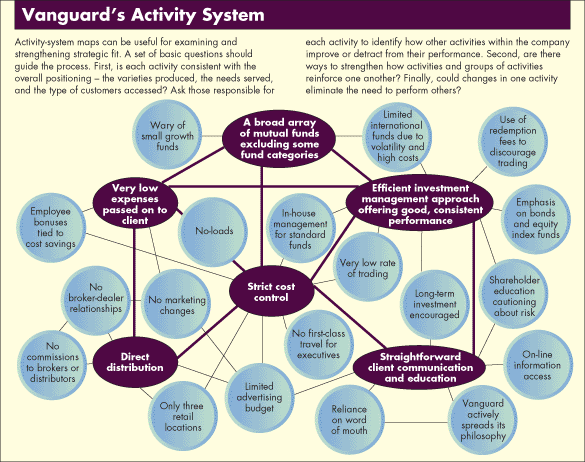

Strategy Development
Our Perspective
Strategy is fundamentally about making choices that create a differentiated market position. It sounds easy, but is very hard in practice. Why? Because it involves challenging trade-offs. A shift in strategy requires not only deciding "what to do", but also deciding "what not to do". To illustrate the challenge, let's look at an illustration of Vanguard's activity system:

Source: "What is Strategy?", Harvard Business Review, Michael Porter
Vanguard has put in place a set of inter-loacking activities that support their pursuit of a low-cost investing strategy. Given the long-term trend towards investing in low-cost index funds, other firms have have tried to gain share in passive funds. So, how has Vanguard been able to maintain it's #1 position in index funds? Because Vanguard's success is not due to a handful of strategic choices - it's due to the self-reinforcing nature of an entire activity system. Traditional asset managers have a completely different activity system that aligns well with a focus on active management, but is ill-suited to competing head-on with Vanguard.
Our Approach
The core of our strategy development process involves addressing five strategic questions:
- What are our goals?
- Where will we play?
- How will we win?
- What capabilities must be in place?
- What management systems are required?
These questions are addressed using a four-step approach:
- Define strategic choices
- Identify key asumptions ("what we need to believe") for each strategy choices
- Test key assumptions
- Articulate Strategy
We take a flexible and highly collaborative approach, involving all of the key stakeholders in a process which is adapted to your specific needs. Please get in touch to learn about how we've used this approach to align leadership teams around a compelling strategy.